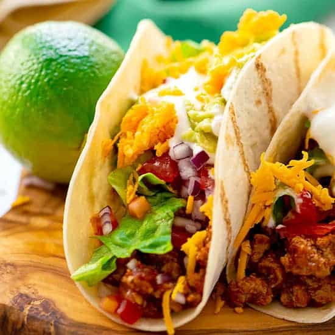

Taco

Description
Tacos are the national dish of Mexico, dating back to the Mexican silver mines of the 18th century, when the word taco referred to gunpowder that was wrapped in a piece of paper and inserted into rocks. It was used to excavate the precious ore from mines and was called tacos de minero or miner's tacos. Today, the word is widely known to signify the leading street food and fast food item in Mexico – thin, flat griddle-baked tortillas topped with numerous fillings, folded and eaten without any utensils.
Ingredients
- 1 lb. 90% to 93% lean ground beef
- 1 Tablespoon chili powder
- 1 teaspoon ground cumin
- 3/4 teaspoon salt
- 1/2 teaspoon dried oregano
- 1/2 teaspoon garlic powder
- 1/4 teaspoon ground black pepper
- 1/2 cup tomato sauce
- 1/4 cup water
- 12 taco shells - either hard shells or small 6-inch soft flour tortillas will work
- Optional Taco Toppings: shredded cheese shredded lettuce, chopped tomatoes, diced red onion, taco sauce, sour cream, guacamole, etc.
Steps
- Add the beef to a large skillet over medium-high heat. Break the meat apart with a wooden spoon. Add the chili powder, cumin, salt, oregano, garlic powder, and pepper to the meat. Stir well. Cook until the meat is cooked through, about 6-8 minutes, stirring occasionally.
- Reduce the heat to medium. Add the tomato sauce and water. Stir to combine. Cook, stirring occasionally, for 7-8 minutes, until some of the liquid evaporates but the meat mixture is still a little saucy. Remove from the heat.
- Warm the taco shells according to their package directions.
- Fill the taco shells with 2 heaping tablespoons of taco meat. Top with desired taco toppings: shredded cheese, shredded lettuce, chopped tomatoes, diced red onion, taco sauce, sour cream, guacamole, etc.